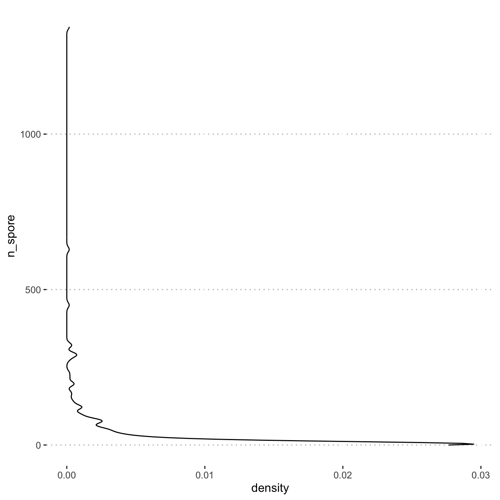
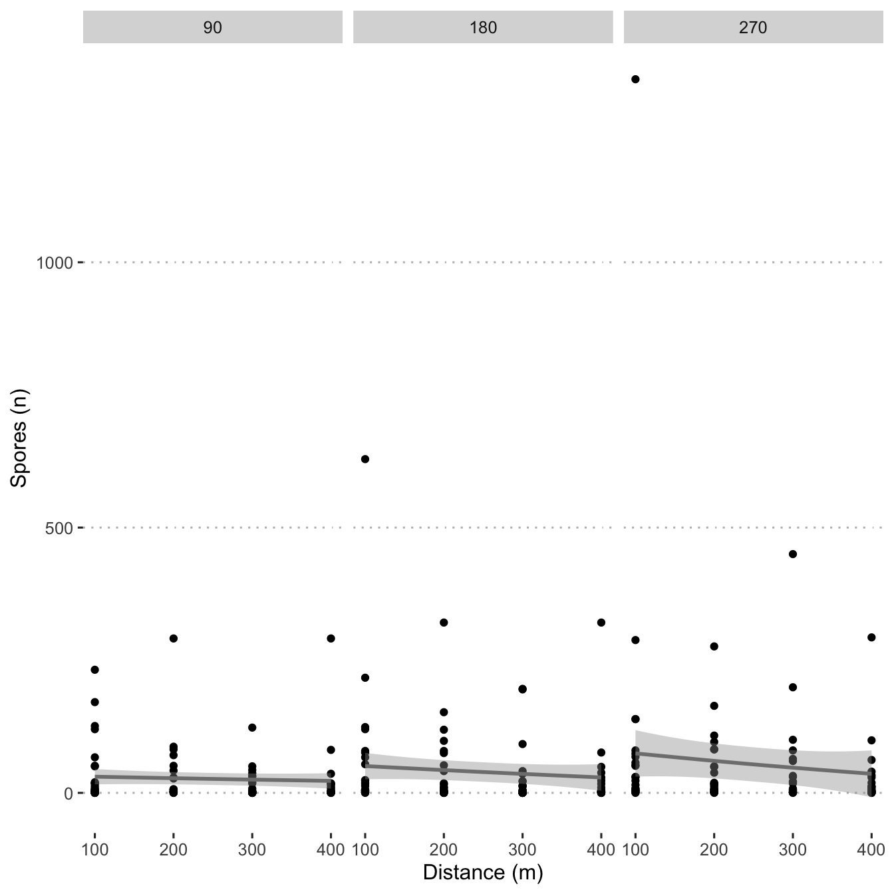
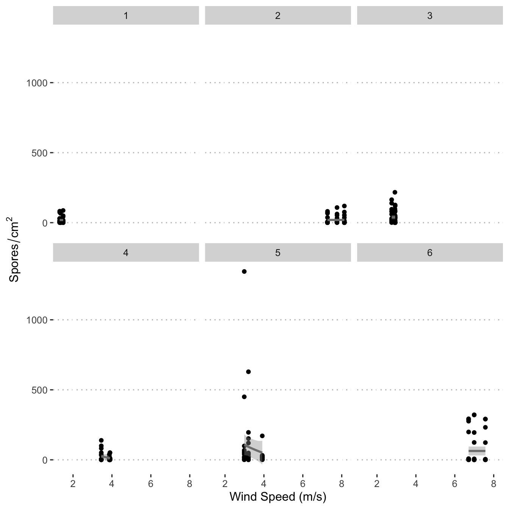
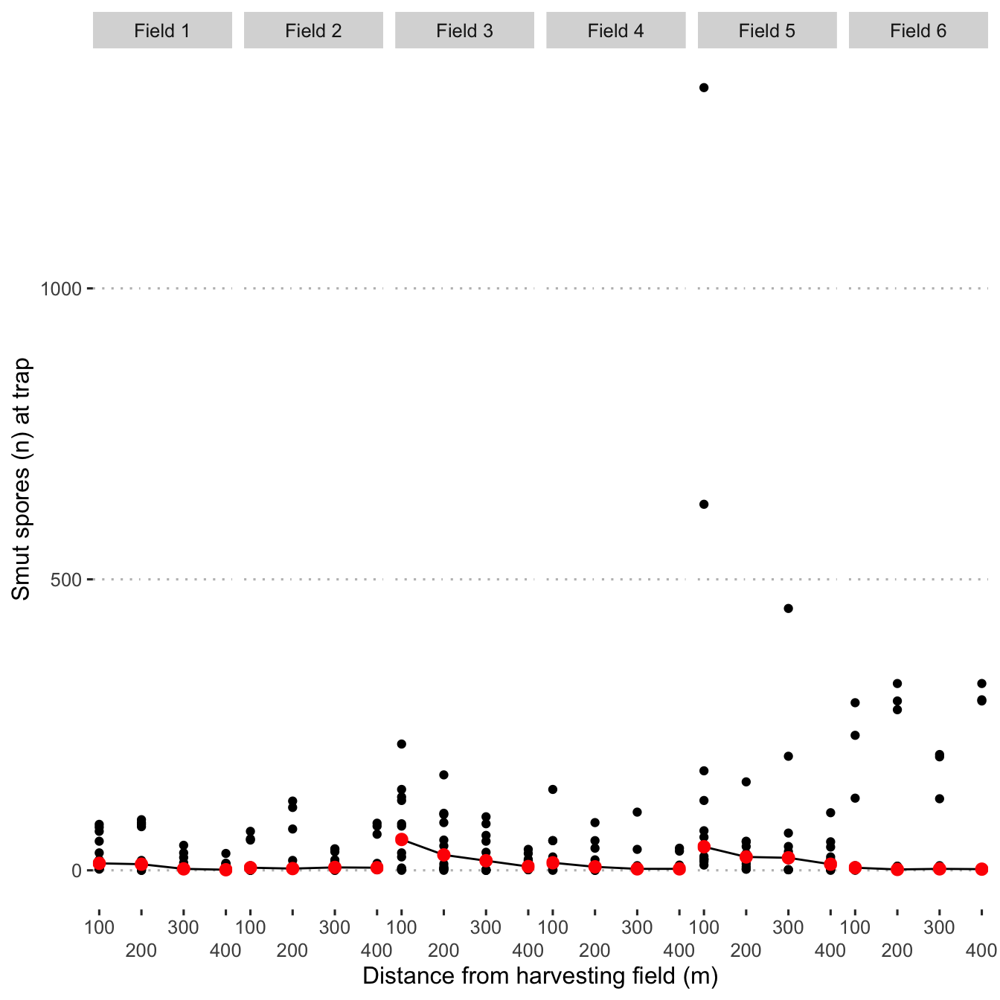

Visualise data
Load libraries
library("tidyverse")
library("ggpubr")
library("here")
library("clifro")
theme_set(theme_pubclean())Load data
load(here("data/dat.Rdata"))
load(here("data/mod_dat.Rdata"))Plot spore dispersal density
Plot spore densities
Create a density plot of the observed spore dispersal values.
ggplot(mod_dat, aes(y = spore_cm2)) +
geom_density()
Create a scatter plot and use stat_smooth() to fit a line.
ggplot(mod_dat, aes(x = distance_m, y = spore_cm2)) +
geom_point() +
scale_fill_viridis_c() +
geom_smooth(method = "gam", formula = y ~ s(x, bs = "cs", k = 3)) +
labs(y = expression(Spores/cm^{2}),
x = "Distance (m)") +
facet_grid(time_slice ~ .)
Create a violin plot with each time as a colour.
ggplot(mod_dat, aes(x = as.factor(distance_m), y = spore_cm2)) +
geom_violin() +
labs(y = expression(Spores/cm^{2}),
x = "Distance (m)")
Check windspeed effect
Create a hexbin plot to display the number of spores by wind speed and fit a smoothed line to these variables.
ggplot(data = mod_dat, aes(x = wind_speed, y = spore_cm2)) +
scale_fill_viridis_c() +
geom_hex() +
geom_smooth() +
labs(y = expression(Spores / cm ^ {
2
}),
x = "Wind Speed (m/s)") +
theme(
legend.position = "top",
legend.background = element_blank(),
legend.key = element_blank()
) +
guides(fill = guide_legend(title.position = "top",
title.hjust = 0.5))
Polar coordinates
Create polar coordinate plots that display spore density in each cardinal direction.
ggplot(data = mod_dat) +
aes(
x = trap_degrees,
y = distance_m,
colour = spore_cm2,
size = spore_cm2
) +
facet_grid(time_slice ~ field) +
coord_polar(theta = "x",
start = 0,
direction = 1) +
geom_count(alpha = 0.55) +
scale_colour_viridis_c(
direction = -1,
name = "Smut spores/m²",
guide = "legend",
breaks = c(10, 100, 200, 300),
begin = 0,
end = 0.8
) +
scale_size(
range = c(1, 8),
name = "Smut spores/m²",
breaks = c(10, 100, 200, 300)
) +
scale_x_continuous(
breaks = c(0, 90, 180, 270),
expand = c(0, 0),
limits = c(0, 360),
labels = c("N", "E", "S", "W"),
sec.axis = sec_axis(
~ . ,
name = "Field",
breaks = NULL,
labels = NULL
)
) +
scale_y_continuous(
breaks = c(0, 100, 200, 300, 400),
limits = c(0, 400),
sec.axis = sec_axis(
~ . ,
name = "Minutes since harvest beginning",
breaks = NULL,
labels = NULL
)
) +
ylab("Distance (m)") +
xlab("") +
theme(
legend.position = "top",
legend.background = element_blank(),
legend.key = element_blank()
) +
guides(color = guide_legend(title.position = "top",
title.hjust = 0.5))
ggsave(
last_plot(),
file = "plots/spores_cardinal.png",
width = 20,
height = 10,
units = "cm",
dpi = 600,
scale = 1.5
)Plot wind data
Wind roses
Using the wind_rose() from clifro, create windrose plots to visualise windspeeds and directions during the harvest and spread events.
wind_rose <-
with(
mod_dat,
windrose(
speed = wind_speed,
direction = wind_degrees,
facet = field,
n_speeds = 5,
n_col = 3
)
)
wind_rose +
scale_fill_viridis_d(
name = "Wind Speed (m/s)",
direction = -1,
begin = 0,
end = .8
) +
labs(x = "", y = "") +
theme(legend.position = 'top') +
guides(fill = guide_legend(
title.position = "top",
title.hjust = 0.5,
keywidth = unit(1, "lines"),
keyheight = unit(1, "lines")
)) +
theme_pubclean()
ggsave(
last_plot(),
file = "plots/wind_rose_6_tr.png",
width = 20,
height = 10,
units = "cm",
dpi = 600,
scale = 1.5
)Plot smoothed spore dispersal
Plot spore dispersal with smoothed lines for spore traps that are classified as “upwind”, “downwind” or “lateral”.
mod_dat %>%
ggplot(aes(distance_m, spore_cm2, col = downwind)) +
geom_point() +
geom_smooth(se = FALSE) +
facet_grid(field ~ .) +
scale_x_continuous(
sec.axis = sec_axis(
~ . ,
name = "Minutes since harvest beginning",
breaks = NULL,
labels = NULL
)
) +
scale_y_continuous(
sec.axis = sec_axis(
~ . ,
name = "Field",
breaks = NULL,
labels = NULL
)
) +
scale_colour_viridis_d() +
labs(col = "Prevailing wind",
x = "Distance from harvesting field (m)",
y = "Smut spores / m² at trap") +
theme(
legend.position = "top",
legend.justification = "center",
legend.direction = "horizontal",
legend.background = element_blank(),
legend.key = element_blank()
) +
guides(colour = guide_legend(title.position = "top",
title.hjust = 0.5))
ggsave(
last_plot(),
file = "plots/spore_gradient.png",
w = 6,
h = 4,
scale = 1.2
)Spore type frequency
dat_spore_type <- read_csv("data/spore_type.csv")head(dat_spore_type)## # A tibble: 6 × 4
## meter rep spore_nuclei count
## <dbl> <dbl> <dbl> <dbl>
## 1 100 1 1 3
## 2 100 1 2 35
## 3 100 1 3 17
## 4 100 1 4 4
## 5 100 1 5 1
## 6 100 2 1 3dat_spore_type %>%
group_by(meter, spore_nuclei, .drop = FALSE) %>%
summarise(count = mean(count)) %>%
mutate(percent = count / sum(count)) %>%
ggplot(aes(
x = meter,
y = percent,
fill = factor(spore_nuclei)
)) +
geom_bar(position = "fill", stat = "identity") +
labs(y = "Spore type frequency",
x = "Distance from harvesting field (m)",
fill = "Nuclei per\npropagle unit") +
scale_fill_viridis_d(direction = -1) +
geom_text(
aes(label = round(percent, 2)),
position = position_stack(vjust = 0.5),
col = "white",
fontface = "bold",
size = 3
)
ggsave(
last_plot(),
file = "plots/spore_type.png",
width = 8,
height = 8,
units = "cm",
dpi = 300,
scale = 1.5
)Spore size
dat_spore_size <- read_csv("data/spore_size.csv")head(dat_spore_size)## # A tibble: 6 × 4
## image_id spore_type d1 d2
## <chr> <dbl> <dbl> <dbl>
## 1 36 1 19.6 20.3
## 2 42 1 18.5 17.6
## 3 41 1 18.8 17.4
## 4 45 1 18.3 21.2
## 5 44 1 17.5 20.0
## 6 46 1 18.1 18.1library(ggridges)
dat_spore_size %>%
filter(image_id != 34) %>%
mutate(d_mean = (d1 + d2) / 2) %>%
ggplot(aes(x = d_mean, y = factor(spore_type))) +
geom_density_ridges(
aes(stat = "density"),
alpha = 0.5,
jittered_points = TRUE,
scale = 0.5,
rel_min_height = 0.01,
point_shape = "|",
point_size = 1,
size = 0.25,
position = position_points_jitter(height = 0)
) +
labs(x = expression(paste("Mean diameter (", mu, m, ")")),
y = "Spore type",
fill = "") +
guides(fill = "none")
ggsave(
last_plot(),
file = "plots/spore_size.png",
width = 8,
height = 8,
units = "cm",
dpi = 300,
scale = 1.5
)